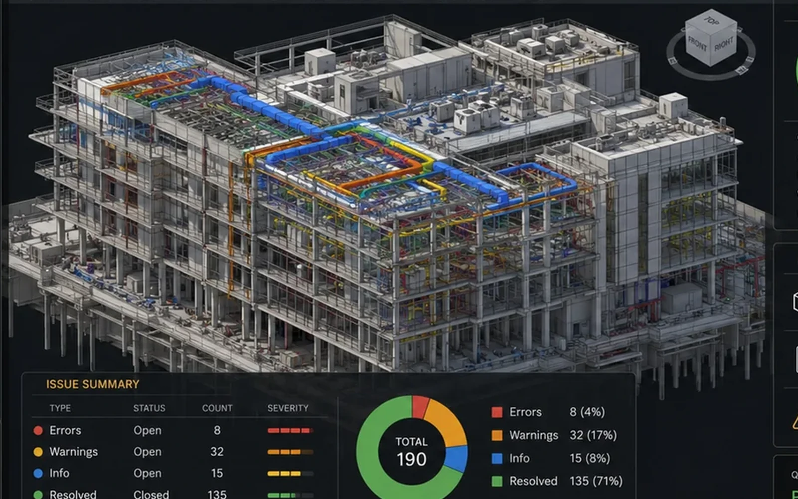
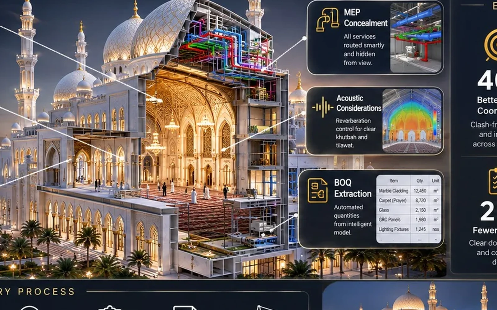
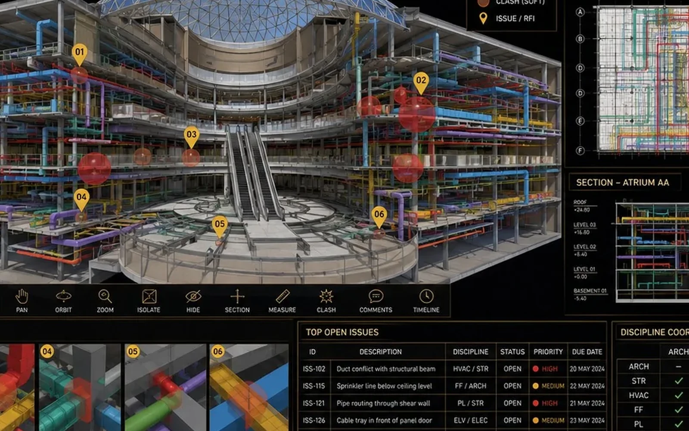

Efficiency, product-market fit, phasing and cost awareness.
BADR / CAIRO / GLOBAL
Real Estate Advisory + Architecture + Engineering + BIM
We start before the first line is drawn.

Development Design PartnerStrategy → Design → Engineering → BIM
Profit • Value • Impact
LAND Site IntelligenceMARKET Product StrategyDESIGN ArchitectureENGINEERING CoordinationBIM Digital DeliveryVALUE Development IntelligenceLAND Site IntelligenceMARKET Product StrategyDESIGN ArchitectureENGINEERING CoordinationBIM Digital DeliveryVALUE Development Intelligence
Three Connected Practices
Architecture. Engineering. Value Creation.
Move through BADR by the decision you need to make.
The BADR Development Thesis
A stronger investment starts with a stronger design decision.
We do not separate commercial logic from architectural quality.
Positioning, identity, buyer perception and memorable experience.
Places that strengthen people, context and the developer's reputation.
DEVELOPER⌖
Opportunity
Land, capital, ambition and market demand define the opportunity.
+
BADR◇
Development Intelligence
We connect site, product, planning, architecture, identity, engineering and BIM.
=
PROJECT↗
Profit + Value + Impact
A commercially clearer, more memorable and more coordinated project.
How We Create Value
The best time to improve a project is before it becomes expensive to change.
We can join before the brief is fixed.
LANDRead the opportunity
Access, frontage, regulation, visibility, climate and context.
MARKETDefine the product
Target user, mix, positioning and amenities.
DESIGNCreate the signature
Masterplan, architecture, façades, landscape and experience.
ENGINEERINGProtect buildability
Structure, MEP, constructability and review.
BIM + DIGITALCreate decision certainty
Models, quantities, 4D/5D and handover.
Selected Architecture
Different markets. One discipline.
Residential, mixed-use, retail, hospitality, civic and cultural work.

Global Reach
Rooted in Badr City, Cairo. Shaped by different markets.
The supplied portfolio records work across multiple regions.
CairoRiyadhJeddahMakkahDubaiDohaKuwait CityMuscatManamaTorontoNew Jersey

Published portfolio + featured development studies
Zoom in to move from country totals to city-level projects.
Zoom in to move from country totals to city-level projects.



BIM + Digital Delivery
The design promise must survive technical reality.
Architecture, structure and MEP are developed as one coordinated information environment.
Explore BIM & digital delivery
Dr. Hani Youssef
Founder • Real Estate Development Advisory • Architecture & BIM
For Developers & Landowners
Bring us the land before you bring us the brief.
Let us test what the opportunity can become.